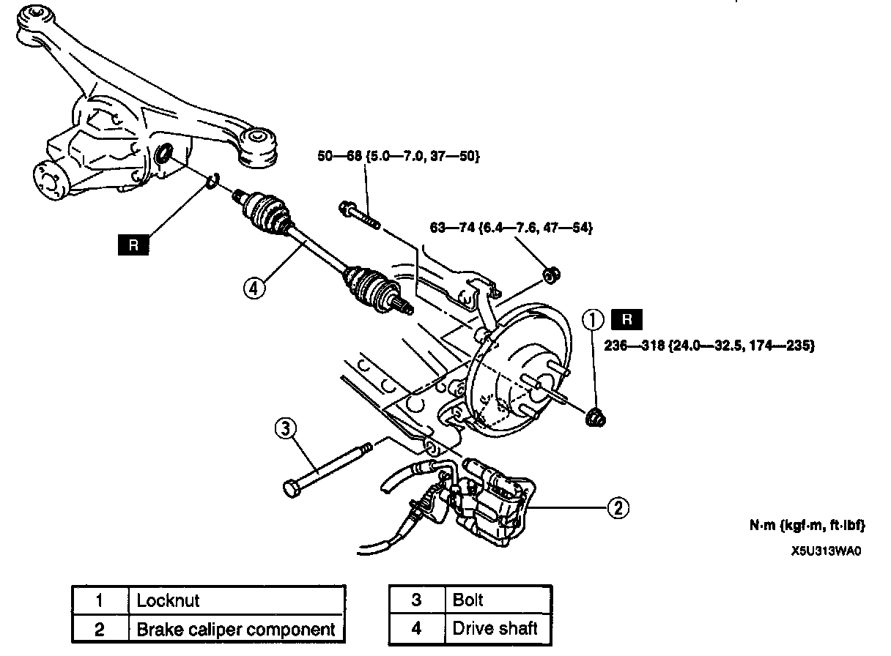
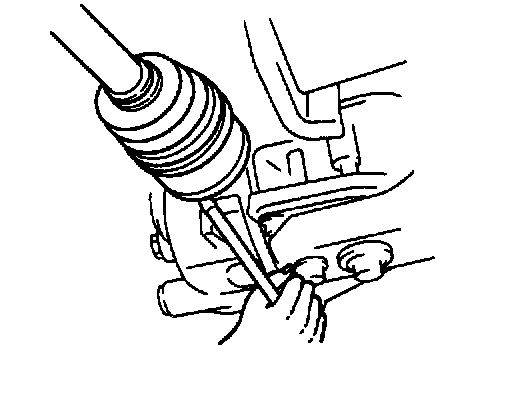
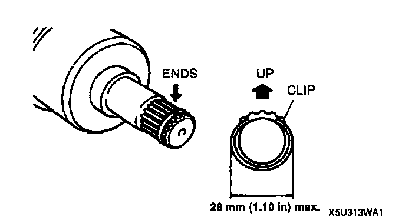

Removal and Installation
REMOVAL/INSTALLATIONCAUTION:
- Performing the following procedures without first removing the ABS wheel-speed sensor may possibly cause an open circuit in the harness if it is pulled by mistake. Before performing the following procedures, remove the ABS wheel-speed sensor (axle side) and fix it to an appropriate place where the sensor will not be pulled by mistake while servicing the vehicle.

1. Remove in the order indicated in the table.
2. Install in the reverse order of removal.
Drive Shaft Removal Note
Note:
- If the drive shaft will not come out of the rear hub support easily, install a discarded nut onto the drive shaft so that the nut is flush with the end of the drive shaft. Tap the nut with a copper hammer to loosen the drive shaft from the wheel hub.

1. Pull the rear hub support from the drive shaft.
2. Remove the drive shaft from the differential by using a pry bar.
Drive Shaft Installation Note
1. install a new clip onto the drive shaft.
2. Measure the outer diameter of the clip after installing, and replace the clip if it exceeds the specification.
Caution:
- The sharp edges of the drive shaft snap ring can slice or puncture the oil seal. Be careful when installing the drive shaft to the transmission.

3. With the ends of the clip facing upward, push the drive shaft into the differential.
4. After installation, pull outward on the double offset joint outer ring and verify that the drive shaft is securely held by the clip.